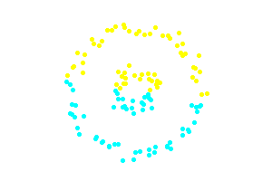
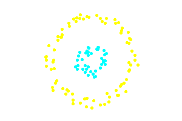
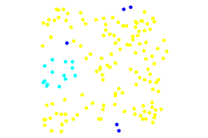
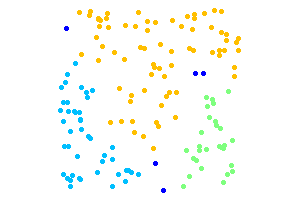

Dbscan text clustering Sep 3rd, 2013
In this article I will be introducing Density Based Spatial Clustering of Applications with Noise, known as DBSCAN. DBSCAN is the latest addition to the Clustering namespace of php (it is still under development and not merged into master).
DBSCAN is a density based clustering algorithm because it finds a number of clusters starting from the estimated density distribution of corresponding nodes
Wikipedia
Dbscan Implementation
The current implementation in NlpTools takes as a parameter an object that implements SpatialIndexInterface.
This is used to abstract away the logic of searching a set of points for neighbors so that this process can be optimized. For instance we could implement k-d trees or ball trees for faster neighbor searching. The current implementation uses naive linear search and has complexity O(n2).
Examples
The above code creates a very simple dataset with two distinct clusters in the two-dimensional euclidean space. This simple dataset is often used as an example to illustrate the differences between DBSCAN and K-Means.
 
The second example that follows illustrates the property of DBSCAN to identify noise points and determine the number of clusters in the datatset. The dark blue points are noise. The points to be clustered are uniformly random.
